Introduction to Non-theoretical Computational Geometry
Table of Contents
Based on TopCoder's thrive and Computational Geometry (252-1425-00L) HS13 lecture notes.
(Problems mostly from LeetCode)
Introduction
I'm not sure how to properly introduce this long plain text —or even how to put it—. You can easily consider it as a small handbook that contains some computational problems solutions, or like Nietzsche says in his Dawn of Day:
"A DIGRESSION.—A book like this is not intended to be read through at once, or to be read aloud. It is intended more particularly for reference, especially on our walks and travels: we must take it up and put it down again after a short reading, and, more especially, we ought not to be amongst our usual surroundings."
So, yeah. Read it when some problem tag is matched here (actually I wouldn't mind reading it aloud but I liked to put the quote😎).
Vectors
Basically, a vector is a geometric object with length and direction (direction and magnitude). In the case of two-dimension geometry, we represent vectors as a pair of numbers \((x, y)\), it's important to understand vectors arithmetically, for example, a line segment from \((1,3)\) to \((5,1)\) can be represented by the vector \((4,-2)\) (A line segment has two endpoints which contains all the points of the line between them) you should notice that in the second representation, a vector only defines the direction and the magnitude of the segment, but it can't define the starting and the ending locations.
Operations on Vectors
Addition
The most beloved operation in which authors wastes ~3 pages in their textbook to explain it. You can add two vector together and as a result you get a new vector, if you have two vectors \((x_1, y_1)\) and \((x_2, y_2)\) then the sum of them is the vector \((x_1 + x_2, y_1 + y_2)\)
Dot Product
The dot product is the sum of the corresponding element, notice that it is not a vector, but a number. For example, if we have the two vector \((x_1, y_1)\) and \((x_2, y_2)\) then their dot product is simply \((x_{1} \cdot x_{2}) + (y_1 \cdot y_2)\), we call the product number a scalar.
The reason why scalar is a useful concept (at least more than addition and subtraction) is that, let \(A\) and \(B\) be two vectors, then \(A \cdot B = |A| \cdot |B| \cos(\theta)\) where \(\theta\) is the angle between \(A\) and \(B\), \(|A|\) is called the norm of vector which is computed from the formula \(\sqrt{ (x_{1})^2 + (y_{1})^2 }\) . Therefore, we can calculate any angle between two vectors simply using two steps:
- Calculate \(\cos(\theta) = \frac{a \cdot b}{|a| \cdot |b| }\)
- Use the \(acos\) function to calculate \(\theta\)
Cross Product
This is more like the regular product: the cross product of 2D vectors \((x_1, y_1)\) and \((x_2, y_2)\) is \(x_{1} \cdot y_{2} - y_{1} \cdot x_{2}\), and its formula \(A \cdot B = |A| \cdot |B| \cdot sin(\theta)\) as you see can see, this operation can be useful too in calculating \(\theta\) in some situations. However, \(\theta\) has a slightly different meaning here, in this case the absolute value of \(\theta\) is the angle between the two vectors but it is negative or positive based on the right-hand rule.
Line-Point Distance
Lets say that you are given 3 points, \(A\), \(B\), and \(C\), and you want to find the distance from the point $C$to the line defined by \(A\) and \(B\).The first step is to find the two vectors from \(A\) to \(B\) \((AB)\) and from \(A\) to \(C\) $(AC).$
Now, take the cross product \(AB \cdot AC\), and divide by \(|AB|\). This gives you the distance (denoted by the red line) as \(\frac{(AB \cdot AC)}{|AB|}\). And here you are done.
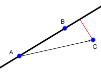
The reason this works comes from some basic high school level geometry. The area of a triangle is found as \(\frac{\text{base} \cdot \text{height}}{2}\). Now, the area of the triangle formed by \(A\), \(B\) and \(C\) is given by \(\frac{AB \cdot AC}{2}\) Since the base of the triangle is formed by \(AB\), and the height of the triangle is the distance from the line to \(C\). Therefore, what we have done is to find twice the area of the triangle using the cross product, and then divided by the length of the base. As always with cross products, the value may be negative, in which case the distance is the absolute value.
Let's repeat in C(++):
//Compute the dot product AB ⋅ BC int dot(int[] A, int[] B, int[] C) { AB = new int[2]; BC = new int[2]; AB[0] = B[0] - A[0]; AB[1] = B[1] - A[1]; BC[0] = C[0] - B[0]; BC[1] = C[1] - B[1]; int dot = AB[0] * BC[0] + AB[1] * BC[1]; return dot; } //Compute the cross product AB x AC int cross(int[] A, int[] B, int[] C) { AB = new int[2]; AC = new int[2]; AB[0] = B[0] - A[0]; AB[1] = B[1] - A[1]; AC[0] = C[0] - A[0]; AC[1] = C[1] - A[1]; int cross = AB[0] * AC[1] - AB[1] * AC[0]; return cross; } //Compute the distance from A to B double distance(int[] A, int[] B) { int d1 = A[0] - B[0]; int d2 = A[1] - B[1]; return sqrt(d1d1 + d2d2); } //Compute the distance from AB to C //if isSegment is true, AB is a segment, not a line. double linePointDist(int[] A, int[] B, int[] C, boolean isSegment) { double dist = cross(A, B, C) / distance(A, B); if (isSegment) { int dot1 = dot(A, B, C); if (dot1 > 0) return distance(B, C); int dot2 = dot(B, A, C); if (dot2 > 0) return distance(A, C); } return abs(dist); }
Polygon Area
Consider this non-convex:
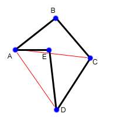
To find its area we are going to start by triangulating it. That is, we are going to divide it up into a number of triangles. In this polygon, the triangles are ABC, ACD, and ADE. But not all of those triangles are part of the polygon! We are going to take advantage of the signed area given by the cross product, which will make everything work out nicely.
First, we’ll take the cross product of \(AB \cdot AC\) to find the area of \(ABC\). This will give us a negative value, because of the way in which \(A\), \(B\) and \(C\) are oriented. However, we’re still going to add this to our sum, as a negative number. Similarly, we will take the cross product \(AC \cdot AD\) to find the area of triangle \(ACD\), and we will again get a negative number. Finally, we will take the cross product \(AD \cdot AE\) and since these three points are oriented in the opposite direction, we will get a positive number. Adding these three numbers (two negatives and a positive) we will end up with a negative number, so will take the absolute value, and that will be area of the polygon.
The reason this works is that the positive and negative number cancel each other out by exactly the right amount. The area of \(ABC\) and \(ACD\) ended up contributing positively to the final area, while the area of \(ADE\) contributed negatively. Looking at the original polygon, it is obvious that the area of the polygon is the area of \(ABCD\) (which is the same as \(ABC\) + \(ABD\)) minus the area of \(ADE\).
// (X[i], Y[i]) are coordinates of i'th point. double polygonArea(double X[], double Y[], int n) { // Initialize area double area = 0.0; // Calculate value of shoelace formula int j = n - 1; for (int i = 0; i < n; i++) { area += (X[j] + X[i]) * (Y[j] - Y[i]); j = i; // j is previous vertex to i } // Return absolute value return abs(area / 2.0); }
Intersection
The first thing to think about in line-line intersection problem is what form we given our lines in, and what form would we like them in? In the best cases, each line will be in such a form: \(A_{x} + B_{y} = C\) where \(A\), \(B\), and \(C\), are the numbers which define the line. We can generate any equation between two points easily. Say we are given two different points \((x_{1}, y{1})\) and \((x_{2}, y{2})\) and we what to find \(A\), \(B\) and \(C\) for the equation above, we can easily say:
\begin{equation*} a= y_2 - y_1 \end{equation*} \begin{equation*} b= x_1 - x_2 \end{equation*} \begin{equation*} c= ax_1+by_1 \end{equation*}Since this is one of the most problems I noticed people have trouble with, let's try to simplify more than that, consider the following equation:
\begin{equation} y= \underbrace{m}_{slope} \times \overbrace{x}^{x \ coordinate} + \underbrace{y}_{y \ intercept} \end{equation}This basic formula is called slope-intercept form:
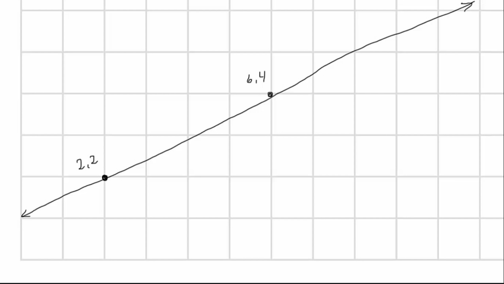
From the figure you can notice that the line crosses the \(y\) axis at \(y = 1\), so in formula, \(b\) (the \(y\) intercept) is 1. The slope, is the ratio of the change in the way axis for a given change in the \(x\) axis, in this figure it's \(\frac{1}{2} = 0.5\), so we can tell that the slope-intercept form for this line is \(y=.5x+1\). That's nice, but in code, we can't and we shouldn't solve this visually at all.
So, we have got to, first, calculate the swap form the formula \(\frac{y_{2} - y_{1}}{x_2 - x_1}\), here we can take \(\frac{4-2}{6-2} = \frac{2}{4} = 0.5\), this gives us \(y = .5x + b\) now we can use each of the given point [ \((2,2)\) or \((6,4)\) ] in this equation, let's take \((2,2)\), this give us: \(2=0.5 \times 2 + b\), \(2 = 1 + b\), \(b = 1\), and we have the final formula again: \[y = 0.5x + 1\]
Anther way to define a line is called the standard form: \(A_x + B_y = C\) and both \(A_x\) and \(B_y\) should be integers, and \(A_x\) can't be negative. We can rearrange our final formula to fit the standard form by reformatting it to \(-0.5x + y = 1\), you can observe that \(A_x\) is neither positive nor integer, we can fix it by multiplying by -2: we should get: \(x - 2y = -2\) and of course you can test it with replacing \(x\) and \(y\) by any of the given points, the result should be equal to \(-2\).
Another nice way to get this form is that we can calculate \(A\) by this subtraction: \(A_x = y_2 - y_1\), and \(B_y\) is \(x_{1} - x_{2}\) and \(C\) is just \(A_x + B_y\), lets' take the points we have and try to apply this, we get:
\[A= 4-2 =2\]
\[B= 2-6 =-4\]
Now all what you have to do is putting these numbers in the standard form equation, and you get:
\begin{equation*} 2x-4y=C \end{equation*}And by replacing \(x\) and \(y\) by any of the given points, say \((2,2)\), we can solve this equation for \(C\), it is \(-4\) so the final equation is:
\begin{equation*} 2x - 4y = -4 \end{equation*}Now, let's define what we mean by intersection, let's say we have the following points \(P_1, \ P_2, \ P_3, \ P_4\) showing in the following figure:
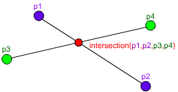
As these are two lines, we should have two equations for each line:
\begin{equation*} A_{1}x + B_{1}y = C_{1} \ \ \ (P_1,P_2) \tag{1} \end{equation*} \begin{equation*} A_{2}x + B_{2}y = C_{2} \ \ \ (P_2,P_4) \tag{2} \end{equation*}Now, you can notice that these line intersect in the figure, so they share an intersection point (the red point), so we can say that there is a single value in \(x\) and \(y\) that will exist in both of these lines and will satisfy both of their equations, so we need to solve for \(x\) and then for \(y\). But here is a point, you can't solve a single equation with multiple variables for just one of those variables, but if you have two equations that both contain the same two variables, you can combine them in the order to solve for one of those variable using simple algebra, let's combine the two equations, first let's multiple both sides of the first equation by \(B_2\)
\begin{equation*} A_{1}B{2}x + B_{1} B_{2}y = C_{1} B_{2} \tag{1} \end{equation*}And do the same with the second one but by \(B_{1}\)
\begin{equation*} A_{2}B_{1}x + B_{1} B_{2}y = C_{2} B_{1} \tag{2} \end{equation*}If we subtract the first equation from the second one, we will cancel out the second term \(B_{1} B_{2}y\) and we are end with
\begin{equation*} A_{1}B_{2}x - A_{2}B_{1}x = C_{1} B_{2} - C_{2} B_{1} \tag{3} \end{equation*}Here we can extract x
\begin{equation*} x(A_{1}B_{2} - A_{2}B_{1}) = C_{1} B_{2} - C_{2} B_{1} \tag{4} \end{equation*}And now simply you are ready to solve for \(x\): \[ x = \frac{ C_1 B_2 - C_2 B_1 }{ A_1 B_2 - A_2 B_1}\] We can do the same thing for the \(y\) by multiplying by \(A_{1}\) and \(A_{2}\), but I'll save my time and here is the final formula: \[y = \frac{A_{1} C_{2} - A_{2} C_{1}}{A_1 B_2 - A_2 B_1}\].
Now, all what we need to do is taking \(x\) and \(y\) from the original 4 points and use them to get the \(A\), \(B\), and \(C\) for each line, and once we get this, we can calculate the intersection point using the mentioned formulas.
Now, we can repeat easily in C:
double det = A1 * B2 - A2 * B1 if (det == 0) { //Lines are parallel } else { double x = (B2 * C1 - B1 * C2) / det double y = (A1 * C2 - A2 * C1) / det }
Finding The Equation of a Line for a Segment
Let the given segment be \(PQ\) i.e. the known coordinates of its ends \(P_x, P_y, Q_x, Q_y\)
It is necessary to construct the equation of a line in the plane passing through this segment, i.e. find the coefficients \(A_x + B_y + C = 0\) in the equation of a line:
Note that for the required triples there are infinitely many solutions which describe the given segment: you can multiply all three coefficients by an arbitrary non-zero number and get the same straight line. Therefore, our task is to find one of these triples.
It is easy to verify (by substitution of these expressions and the coordinates of the points and into the equation of a straight line) that the following set of coefficients fits:
\begin{align} A &= P_y - Q_y, \\ B &= Q_x - P_x, \\ C &= - A P_x - B P_y. \end{align}TODO Real Case vs. Integer Case
Orientation of 3 Points
To get the intuition of what is left and what is right turn, consider an example shown below.
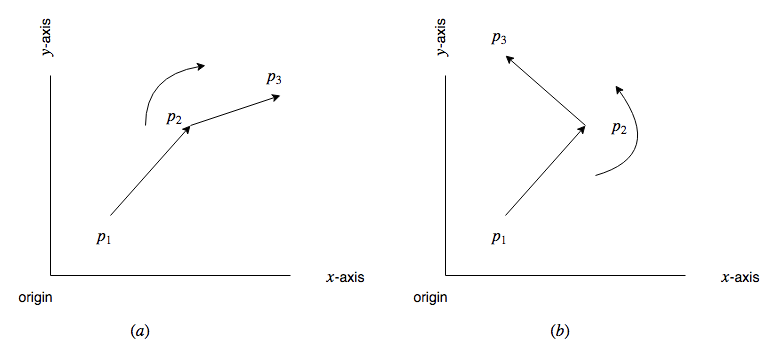
Given two points \(p_1(x1,y1)\) and \(p_2(x2,y2)\), we need to first determine whether point \(p_1\) is clockwise or is anti-clockwise from point \(p2\) with respect to origin. One way of solving this problem is by calculating the angle made by both \(\overline{p_1}\) and \(\overline{p_2}\) with x-axis and the difference in the angle can tell whether one point is clockwise or anti-clockwise from other. There is an easier and efficient solution to this than finding the angle which is calculating the cross product of the vector \(\overline{p_1}\) and \(\overline{p_2}\) Mathematically the cross product of two vectors \(\overline{p_1}\) and \(\overline{p_2}\) is given by
\(p_1 \times p_2 = x_1 y_2 - x_2 y_1\)
If the value of \(p_1 \times p_2\) is positive then \(p_1\) is clockwise from \(p_2\) with respect to origin.
Similarly, if \(p_1 \times p_2\) is negative then p1 is anti-clockwise from \(p_2\) with respect to origin and if the value is 0 then points \(p_1, p_2\) and origin are collinear.
respectively. In order to calculate the cross product of two segments, we need to convert them into the vectors. This can be done in the following way.
\(\overline{p_1p_2} = (x_2 - x_1 , y_2 - y_1)\)
Finding a Circle From 3 Points
Given 3 points which are not colinear (all on the same line) those three points uniquely define a circle. But, how do you find the center and radius of that circle? This task turns out to be a simple application of line intersection. We want to find the perpendicular bisectors of \(XY\) and \(YZ\), and then find the intersection of those two bisectors. This gives us the center of the circle.
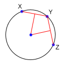
To find the perpendicular bisector of \(XY\), find the line from \(X\) to \(Y\), in the form \(A_x+B_y=C\). A line perpendicular to this line will be given by the equation \(-B_x+A_y=D\), for some \(D\). To find \(D\) for the particular line we are interested in, find the midpoint between \(X\) and \(Y\) by taking the midpoint of the x and y components independently (midpoint, \((x_m,y_m) = (\frac{x_1 + x_2}{2}, \frac{y_1+y_2}{2})\)). Then, substitute those values into the equation to find \(D\). If we do the same thing for Y and Z, we end up with two equations for two lines, and we can find their intersections as described above. Also, keep in mind that the equation of circle in general form is x² + y² + 2gx + 2fy + c = 0 and in radius form is (x – h)² + (y -k)² = r², where (h, k) is the center of the circle and r is the radius.
void findCircle(int x1, int y1, int x2, int y2, int x3, int y3) { int x12 = x1 - x2; int x13 = x1 - x3; int y12 = y1 - y2; int y13 = y1 - y3; int y31 = y3 - y1; int y21 = y2 - y1; int x31 = x3 - x1; int x21 = x2 - x1; // x1^2 - x3^2 int sx13 = pow(x1, 2) - pow(x3, 2); // y1^2 - y3^2 int sy13 = pow(y1, 2) - pow(y3, 2); int sx21 = pow(x2, 2) - pow(x1, 2); int sy21 = pow(y2, 2) - pow(y1, 2); int f = ((sx13) * (x12) + (sy13) * (x12) + (sx21) * (x13) + (sy21) * (x13)) / (2 * ((y31) * (x12) - (y21) * (x13))); int g = ((sx13) * (y12) + (sy13) * (y12) + (sx21) * (y13) + (sy21) * (y13)) / (2 * ((x31) * (y12) - (x21) * (y13))); int c = -pow(x1, 2) - pow(y1, 2) - 2 * g * x1 - 2 * f * y1; // eqn of circle be x^2 + y^2 + 2*g*x + 2*f*y + c = 0 // where centre is (h = -g, k = -f) and radius r // as r^2 = h^2 + k^2 - c int h = -g; int k = -f; int sqr_of_r = h * h + k * k - c; // r is the radius float r = sqrt(sqr_of_r); cout << "Centre = (" << h << ", " << k << ")" << endl; cout << "Radius = " << r; }
Convex Hull
A convex hull of a set of points is the smallest convex polygon that contains every one of the points. It is defined by a subset of all the points in the original set. One way to think about a convex hull is to imagine that each of the points is a peg sticking up out of a board. Take a rubber band and stretch it around all of the points. The polygon formed by the rubber band is a convex hull.
Jarvi's algorithm
\(O(n^2)\) \(O(n \cdot h)\)
There is two approaches to solve this problem, Jarvi's algorithm and Graham Scan, in this article I'm going to use Jarvi's algorithm here, if you are autistic enough you can check Grahm Scan.
he core of Jarvi's algorithm is described in the following points:
- Initialize \(p\) as leftmost point
- Do the following as long as we don't come back to the leftmost point again:
The next point \(q\) is the point such that the triple \((p,\ r,\ q)\) is counterclockwise for any other point \(r\).
To find this we simply initialize \(q\) as the next point, then we traverse through the all points. For any point \(i\), if \(i\) is more counterclockwise, then we update \(q = i\). How to check if point is more counterclockwise? We can use orientation checker:
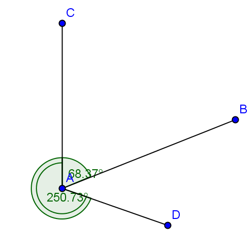
(in this figure, clockwise triplet \(ABC\): cross product of \(AB\) and \(AC\) vectors is \(> 0\) anticlockwise triplet \(ACD\): cross product of \(AC\) and \(AD\) is negative.)
int orientation(Point p, Point q, Point r) { int val = (q.y - p.y) * (r.x - q.x) - (q.x - p.x) * (r.y - q.y); if (val == 0) return 0; // collinear return (val > 0)? 1: 2; // clock or counterclock wise }
If we found that the points are collinear, we should consider taking the points with more distance, using a distance utility
float dis(point p, point q) { return sqrt( pow(p[x] - q[x], 2) + pow(p[y] - q[y] , 2) * 1.0 ); }
- next[p] = q (store \(q\) as next of \(p\) in the output convex hull)
- \(p = q\) (Set p as q for the next iteration)
Now, let's repeat in C(++):
#include <vector> #include <iostream> #include <cmath> #define x 0 #define y 1 #define point vector<int> using namespace std; int orinetation(point p, point q, point r) { int val = (q[y] - p[y] ) * (r[x] - q[x]) - (q[x] - p [x] ) * (r[y] - q[y]); if (val ==0 ) return 0; // collinear return (val > 0) ? 1 : 2; } float dis(point p, point q) { return sqrt(pow(p[x] - q[x], 2) + pow(p[y] - q[y] , 2) * 1.0 ); } vector<vector<int>> jarvis_march(vector<vector<int>> points) { int n = points.size(); vector<vector<int>>hull; if (n < 3) return hull; // find list most int l = 0; for (int i = 1; i < n; i++) { if (points[i][x] < points[l][x]) l = i; } int q, left = l; do { hull.push_back(points[l]); q = (l+1) % n; for (int i = 0; i < n; i++) { int direction = orinetation(points[l], points[i], points[q]); if(direction == 2 || ( direction == 0 && dis(points[i], points[l]) > dis(points[q],points[l])) ) q = i; } l=q; } while (l != left ); return hull; } int main() { vector<vector<int>> po { {1,4}, {3,3} , {5,5} , {9,6} , {5,2}, {0,0} , {3,1} , {7,0} }; vector<vector<int>>l = jarvis_march(po); for (auto i : l) { for (auto k : i) cout << k << " "; cout << endl; } }
| 0 | 0 |
| 7 | 0 |
| 9 | 6 |
| 1 | 4 |
Python implementation:
def jarvis_march(points): # find the leftmost point a = min(points, key = lambda point: point.x) index = points.index(a) # selection sort l = index result = [] result.append(a) while (True): q = (l + 1) % len(points) for i in range(len(points)): if i == l: continue # find the greatest left turn # in case of collinearity, consider the farthest point d = direction(points[l], points[i], points[q]) if d > 0 or (d == 0 and distance_sq(points[i], points[l]) > distance_sq(points[q], points[l])): q = i l = q if l == index: break result.append(points[q]) return result
A visualization:
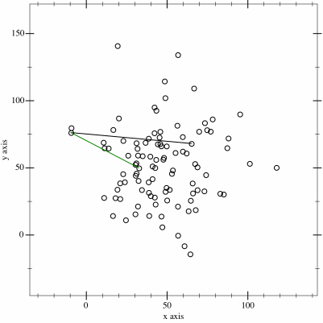
Trace
Let's try to trace the C(++) program above with the very same given points in the program:
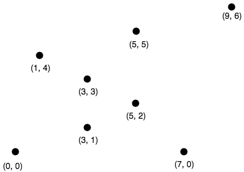
The program first finds the leftmost point by sorting the points on x-coordinates. The leftmost point for the above set of points is \(l=(0,0)\). We insert the point \((0,0)\) into the convex hull vertices as shown by the green circle in the figure below.
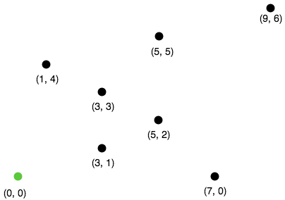
Next we find the left most point from point \(l=(0,0)\). The step by step process of finding the left most point from \(l=(0,0)\) is given below.
- We pick a point following \(l\) and call it \(q\). Let \(q\) be the point \((3,3)\) (You can pick any point, generally we pick next of \(l\) in array of points).
- Let all other points except \(l\) and \(q\) be \(i\). Now we check whether the sequence of points (\(l,i,q)\) turns right. If it turns right, we replace \(q\) by \(i\) and repeat the same process for remaining points.
- Let \(i=(7,0)\). The sequence \(((0, 0), (7, 0), (3, 3))\) turns left. Since we only care about right turn, we don’t do anything in this case and simply move on.
- Let next \(i=(3,1)\). The sequence \(((0, 0), (3, 1), (3, 3))\) turns left and we move on without doing anything.
- Let next \(i=(5,2)\). The sequence \(((0, 0), (5, 2), (3, 3))\) again turns left and we move on.
- Next \(i=(5,5)\). The sequence \(((0, 0), (5, 2), (3, 3))\) is collinear. In the case of collinear, we replace \(q\) with \(i\) only if distance between \(l\) and \(i\) is greater than distance between \(q\) and \(l\). In this case the distance between \((0,0)\) and \((5,5)\) is greater than the distance between \((0,0)\) and \((3,3)\) we replace q with point \((5,5)\).
- Let next \(i=(1,4)\). The sequence \(((0, 0), (1, 4), (5, 5))\) turns right. We replace \(q\) by point \((1,4)\).
- Finally the only choice for \(i\) is \((9,6)\). The sequence \(((0, 0), (9, 6), (1, 4))\) turns left. So we do nothing. We went through all the points and now \(q=(1,4)\) is the left most point.
We add point \((1,4)\) to the convex hull.
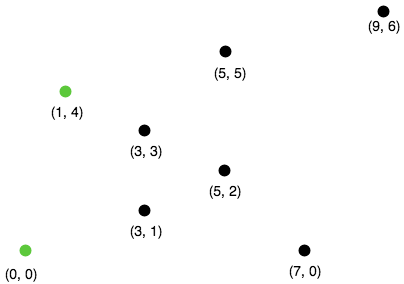
Next, we find the leftmost point from the point \((1,4)\) following the steps 1 - 8 mentioned above. If we follow all the steps, the leftmost point will be \((9,6)\).
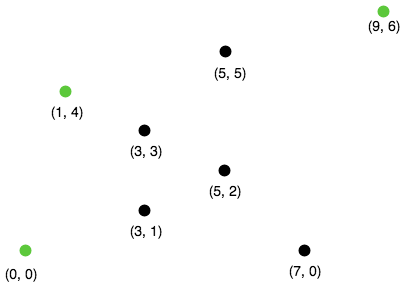
Using the same process, the leftmost point from \((9,6)\) will be the point \((7,0)\).
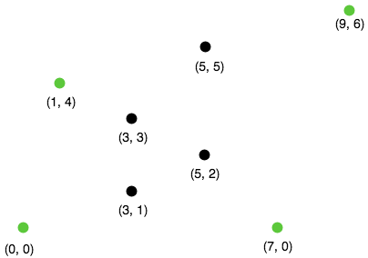
Finally from \((7,0)\) we compute the leftmost point. The leftmost point from \((7,0)\) will be the point \((0, 0)\). Since \((0,0)\) is already in the convex hull, the algorithm stops.
Complexity
The algorithm spends \(O(n)\) time on each convex hull vertex. If there are h convex hull vertices, the total time complexity of the algorithm would be \(O(nh)\). Since h is the number of output of the algorithm, this algorithm is also called output sensitive algorithm since the complexity also depends on the number of output.
Further Reading
- Briquet, C. (n.d.). Introduction to Convex Hull Applications. Lecture. Retrieved August 23, 2018, from http://www.montefiore.ulg.ac.be/~briquet/algo3-chull-20070206.pdf
- Erickson, J. (n.d.). Convex Hulls. Lecture. Retrieved August 23, 2018, from http://jeffe.cs.illinois.edu/teaching/373/notes/x05-convexhull.pdf
- Mount, D. M. (n.d.). CMSC 754 Computational Geometry. Lecture. Retrieved August 23, 2018, from https://www.cs.umd.edu/class/spring2012/cmsc754/Lects/cmsc754-lects.pdf
Grahm Scan
\(O(n \cdot log(n))\)
Graham scan is an algorithm to compute a convex hull of a given set of points in \(O(n\log n)\) time. This algorithm first sorts the set of points according to their polar angle and scans the points to find the convex hull vertices.
The step by step working of a Graham Scan Algorithms on the point set \(P\) is given below.
- Find the point \(P_0\) with the smallest \(y\) -coordinate. In some cases of tie, choose the point with smallest \(x\) coordinate.
Sort the points based on the polar angle i.e. the angle made by the line with the \(x\) -axis. While implementing, we don’t calculate the angle, instead, we calculate the relative orientation of two points to find out which point makes the larger angle. This can be explained with the help of a figure shown below.
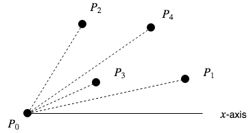
To find out whether the line \(P_0 P_1\) or the line \(P_0 P_3\) makes the larger angle with the \(x\) -axis, we calculate the cross-product of vector \(P_1 P_0\) and vector \(P_1 P_3\) If the cross-product is positive, that means vector \(P_1 P_0\) is clockwise from vector \(P_1 P_3\) with respect to the \(x\) -axis. This indicates that the angle made by the vector \(P_1 P_3\) is larger. We can use any sorting algorithm that has complexity \(O(n \log n)\).
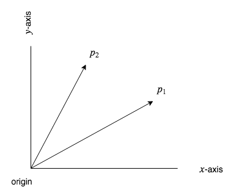
Remainder, to convert a point into a vector we use \[\overline{p_1p_2} = (x_2 - x_1, y_2 - y_1), \overline{p_1p_3} = (x_3 - x_1, y_3 - y_1)\]
It looks like this:
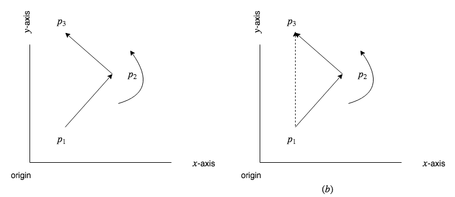
- After sorting, we check for the collinear points. If we find any collinear points, we keep the furthest point from \(P0\) and remove all other points. This step takes \(O(n)\) time.
- First two points in the sorted list are always in the convex hull. In the above figure, points \(P_0\) and \(P_1\) are the vertices of the convex hull. We maintain a stack data structure to keep track of the convex hull vertices. We push these two points and the next point in the list (points \(P_0\),\(P_1\) and \(P_3\) in the figure above) to the stack.
- Now we check if the next point in the list turns left or right from the two points on the top of the stack. If it turns left, we push this item on the stack. If it turns right, we remove the item on the top of the stack and repeat this process for remaining items. This step takes \(O(n)\) times.
If we perform these steps on a set of points, we should get correct convex hull.
Let's repeat in C(++):
#define x 0 #define y 1 #define point vector<int> using namespace std; int orinetation(point p, point q, point r) { int val = (q[y] - p[y] ) * (r[x] - q[x]) - (q[x] - p [x] ) * (r[y] - q[y]); if (val ==0 ) return 0; // collinear return (val > 0) ? 1 : 2; // clockwise : counterclockwise } float dis(point p, point q) { return sqrt( pow(p[x] - q[x], 2) + pow(p[y] - q[y] , 2) * 1.0 ); } vector<vector<int>> jarvis_march(vector<vector<int>> points) { int n = points.size(); vector<vector<int>>hull; if (n < 3) return hull; // find left most int l = 0; for (int i = 1; i < n; i++) { if (points[i][x] < points[l][x]) l = i; } int q, left = l; do { hull.push_back(points[l]); q = (l+1) % n; for (int i = 0; i < n; i++) { int direction = orinetation(points[l], points[i], points[q]); if(direction == 2 || ( direction == 0 && dis(points[i], points[l]) > dis(points[q],points[l])) ) q = i; } l=q; } while (l != left ); return hull; } int main() { vector<vector<int>> pointts = {{0, 3}, {2, 2}, {1, 1}, {2, 1}, {3, 0}, {0, 0}, {3, 3}}; vector <vector<int>> hull = jarvis_march(pointts); for (auto i : hull ) { for (auto j : i ) { cout << j << endl; } cout << endl; } }
Python implementation:
def find_min_y(points): miny = 999999 mini = 0 for i, point in enumerate(points): if point.y < miny: miny = point.y mini = i if point.y == miny: if point.x < points[mini].x: mini = i return points[mini], mini def polar_comparator(p1, p2, p0): d = direction(p0, p1, p2) if d < 0: return -1 if d > 0: return 1 if d == 0: if distance_sq(p1, p0) < distance_sq(p2, p0): return -1 else: return 1 def graham_scan(points): p0, index = find_min_y(points) points[0], points[index] = points[index], points[0] sorted_polar = sorted(points[1:], cmp = lambda p1, p2: polar_comparator(p1, p2, p0)) to_remove = [] for i in range(len(sorted_polar) - 1): d = direction(sorted_polar[i], sorted_polar[i + 1], p0) if d == 0: to_remove.append(i) sorted_polar = [i for j, i in enumerate(sorted_polar) if j not in to_remove] m = len(sorted_polar) if m < 2: print 'Convex hull is empty' else: stack = [] stack_size = 0 stack.append(points[0]) stack.append(sorted_polar[0]) stack.append(sorted_polar[1]) stack_size = 3 for i in range(2, m): while (True): d = direction(stack[stack_size - 2], stack[stack_size - 1], sorted_polar[i]) if d < 0: # if it makes left turn break else: # if it makes non left turn stack.pop() stack_size -= 1 stack.append(sorted_polar[i]) stack_size += 1 return stack
TODO Monotone chain Algorithm
\(O(n \cdot log(n))\)